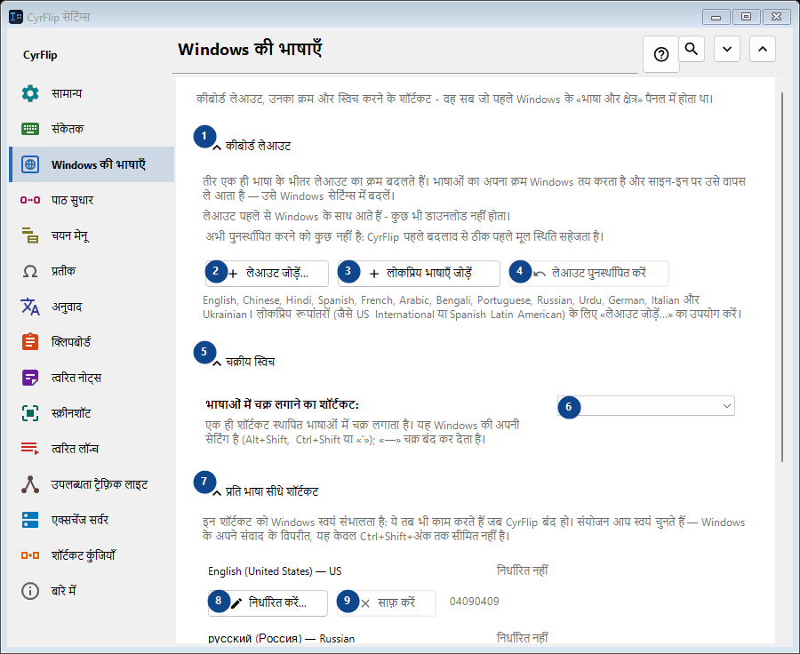
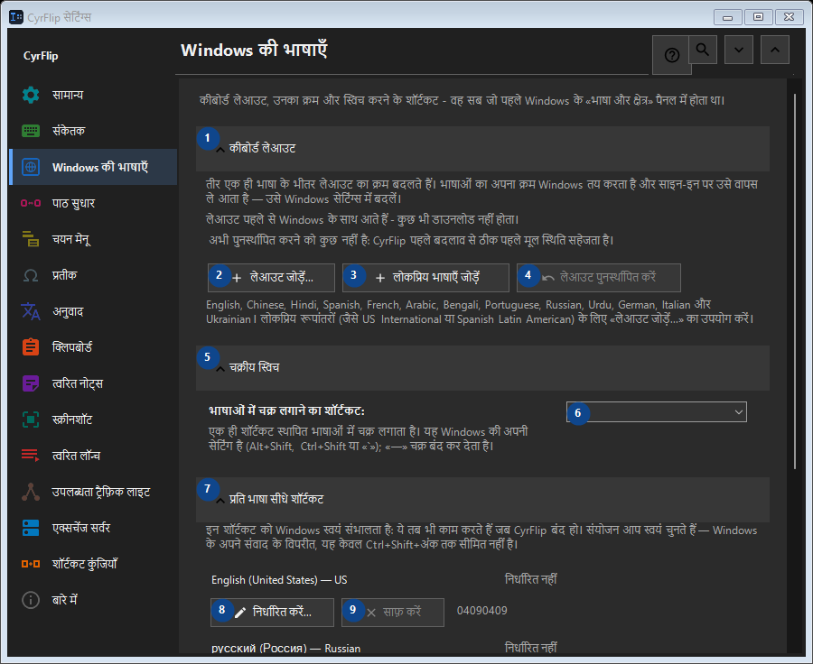

Windows की भाषाएँ
इसका उपयोग
कीबोर्ड लेआउट, उनका क्रम और स्विच करने के शॉर्टकट - वह सब जो पहले Windows के «भाषा और क्षेत्र» पैनल में होता था।


उपयोग का क्रम
सेटिंग तुरंत लागू होती हैं। कोई अनिवार्य क्रम नहीं है; नीचे दिए समूहों का उपयोग करें।
तत्व
1. कीबोर्ड लेआउट
बताई गई कार्रवाई के लिए इस आदेश का उपयोग करें। स्वीकार करने से पहले पुष्टि पढ़ें।
आपके शॉर्टकट2. लेआउट जोड़ें...
बताई गई कार्रवाई के लिए इस आदेश का उपयोग करें। स्वीकार करने से पहले पुष्टि पढ़ें।
आपके शॉर्टकट3. लोकप्रिय भाषाएँ जोड़ें
बताई गई कार्रवाई के लिए इस आदेश का उपयोग करें। स्वीकार करने से पहले पुष्टि पढ़ें।
आपके शॉर्टकट4. लेआउट पुनर्स्थापित करें
अभी पुनर्स्थापित करने को कुछ नहीं है: CyrFlip पहले बदलाव से ठीक पहले मूल स्थिति सहेजता है। यह तत्व अभी उपलब्ध नहीं है। पहले सुविधा चालू करें या कोई प्रविष्टि चुनें।
आपके शॉर्टकट5. चक्रीय स्विच
बताई गई कार्रवाई के लिए इस आदेश का उपयोग करें। स्वीकार करने से पहले पुष्टि पढ़ें।
आपके शॉर्टकट6. भाषाओं में चक्र लगाने का शॉर्टकट
पास के लेबल के अनुसार मान चुनें या दर्ज करें। आगे बढ़ने से पहले जाँचें।
आपके शॉर्टकट7. प्रति भाषा सीधे शॉर्टकट
बताई गई कार्रवाई के लिए इस आदेश का उपयोग करें। स्वीकार करने से पहले पुष्टि पढ़ें।
आपके शॉर्टकट8. निर्धारित करें... - English (United States) - US
बताई गई कार्रवाई के लिए इस आदेश का उपयोग करें। स्वीकार करने से पहले पुष्टि पढ़ें।
आपके शॉर्टकट9. साफ़ करें - English (United States) - US
बताई गई कार्रवाई के लिए इस आदेश का उपयोग करें। स्वीकार करने से पहले पुष्टि पढ़ें। यह तत्व अभी उपलब्ध नहीं है। पहले सुविधा चालू करें या कोई प्रविष्टि चुनें।
आपके शॉर्टकट10. निर्धारित करें... - русский (Россия) - Russian
बताई गई कार्रवाई के लिए इस आदेश का उपयोग करें। स्वीकार करने से पहले पुष्टि पढ़ें।
आपके शॉर्टकट11. साफ़ करें - русский (Россия) - Russian
बताई गई कार्रवाई के लिए इस आदेश का उपयोग करें। स्वीकार करने से पहले पुष्टि पढ़ें। यह तत्व अभी उपलब्ध नहीं है। पहले सुविधा चालू करें या कोई प्रविष्टि चुनें।
आपके शॉर्टकट12. शॉर्टकट पुनर्स्थापित करें
अभी पुनर्स्थापित करने को कुछ नहीं है: CyrFlip पहले बदलाव से ठीक पहले मूल स्थिति सहेजता है। यह तत्व अभी उपलब्ध नहीं है। पहले सुविधा चालू करें या कोई प्रविष्टि चुनें।
आपके शॉर्टकट13. Windows सेटिंग्स
बताई गई कार्रवाई के लिए इस आदेश का उपयोग करें। स्वीकार करने से पहले पुष्टि पढ़ें।
आपके शॉर्टकट14. Windows सेटिंग्स खोलें
Windows सेटिंग्स खोलता है, जहाँ डिस्प्ले भाषा (यानी Windows का अपना अनुवाद) इंस्टॉल की जाती है।
आपके शॉर्टकट